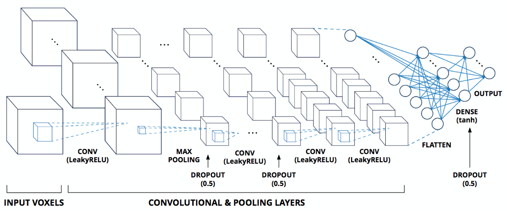

Research
Physics-based simulation produces enormous amounts of data; data-driven methods are hungry for it. Most of my work sits at the seam between the two.
Trajectory formats & metadata
Leading the integration of metadata and provenance into the H5MD trajectory format in GROMACS, so a trajectory stays self-describing long after the run that produced it.
FAIR simulation data
Work with the MDDB consortium and other MD software teams (NAMD, VMD, ViaMD) on shared standards, and co-development of the MOLSIM ontology for a common vocabulary across the field.
Dynamic feature extraction
Turning ensembles of trajectories into voxel-based descriptors of binding pockets, instead of featurising a single static pose — the idea behind Nearl.
3D molecular recognition
How robust are CNN, GNN, PointNet- and Transformer-style models when the 3D object they must recognise is flexible? FEater is a dataset built to answer that honestly.



A binding pocket, decomposed
The pocket is cut into a grid of smaller “molecule blocks”. Each block is featurised independently, which lets features computed from one trajectory be reused in a different structural context. Drag to rotate, hold Ctrl (⌘ on macOS) and scroll to zoom.
Loading structure…
Software
Tools I wrote, co-developed, or contribute to.
GROMACS
Molecular dynamics engine. I work on trajectory I/O — H5MD support and its metadata — and on the new Python API.
Nearl
Automated pipeline that extracts dynamic features from large ensembles of MD trajectories.
FEater
Molecular fragment dataset for benchmarking the robustness of 3D flexible object recognition.
ACGui
Browser-based drug discovery platform: set up, run, store and analyse simulations from one interface.
MOLSIM
Interoperable ontology for representing biomolecular simulation, co-developed with the MD data community.
ParaLig
Parallelised preparation and curation of large compound libraries for virtual screening.
Bena
Deploy benchmarking campaigns on HPC clusters without hand-rolling job scripts.
Kjera
Reveal.js template for interactive scientific slides with embedded 3D molecular views.
Background
-
03/2025 — now
Postdoctoral Researcher & GROMACS Core Developer
KTH Royal Institute of Technology & SciLifeLab, Sweden — with Prof. Erik Lindahl
-
04/2020 — 02/2025
Doctoral Researcher — PhD in Biomolecular Structure and Mechanism
University of Zurich, Switzerland — with Prof. Amedeo Caflisch and Dr. Andreas Vitalis
-
09/2018 — 11/2019
MPhil in Pharmacy and Pharmaceutical Sciences
University of Manchester, UK — with Dr. Richard Bryce
-
09/2014 — 09/2018
BEng in Pharmaceutical Engineering
Shandong Academy of Medical Sciences & University of Jinan, China
Contact
Happy to talk about trajectory formats, featurisation, or anything that makes simulation data more reusable.